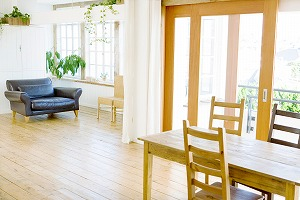
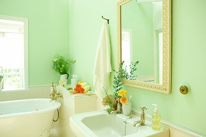
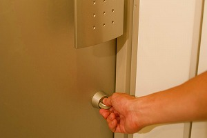
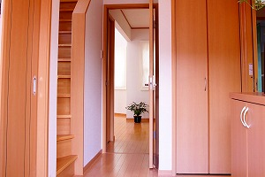
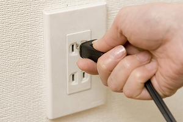
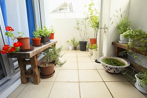

物件選びのポイント
お部屋探しで内覧する際におさえておきたいポイントをまとめています。
- 日当たり
- 水まわり
- セキュリティ
- 収納
- コンセント
- ベランダ
日当たり
冷暖房費に影響するため、非常に重要です。日当たりが悪いと湿気が多く、カビなどの原因になります。南向きは日の当たる時間が長いので、1日中部屋が明るく、冬でも温かく、人気のある方角です。東向きは朝方の日当たりが良いので、快適な気持ちで朝の身支度ができます。西向きは夕方の日当たりがよいので、冬でも夕方まで日射しが入り暖かいといったメリットがあります。ただし、窓の前に大きな建物があれば、日差しはさえぎられてしまうので注意しましょう。
このページの先頭へ
水まわり
使い勝手の良し悪しを確認します。また、実際に水を流して、水の勢いを確認しましょう。また、キッチンは汚れがつきやすい箇所なので細かくチェックします。浴槽は狭さがストレスになる場合が多いので、サイズを必ずチェックします。お風呂場には窓があるか、換気扇があるかどうかもチェックしましょう。
このページの先頭へ
セキュリティ
毎日を安心・安全に過ごすには設備の充実が欠かせません。ピッキングなどの犯罪を考慮して、鍵の状態を確認します。また、室内を覗かれることがないよう、窓の位置やサイズもチェックしましょう。そのほか、管理人が常駐しているかどうか、オートロックや防犯カメラ、モニター付きインターホンなどが設備されているかどうかも確認します。
このページの先頭へ
収納
収納量、使い勝手を確認します。幅や高さ、奥行きなども採寸しておくと、何をどこに収納するかを検討する際に役立ちます。ウォークインクローゼットは、衣類や雑貨など一度に多くの物が収容でき、着替える場所としても利用できます。
このページの先頭へ
コンセント
実際に使用する家具や家電製品の配置を想定し、コンセントの場所や数を確認します。あらかじめ間取り図に書き込んでおくとよいでしょう。特にテレビは、電源とアンテナケーブルを使うので、配置が限られます。
このページの先頭へ
ベランダ
窓を開けてベランダに出てみましょう。ベランダの広さを確認します。また、ベランダに洗濯物が干せるかどうかも重要なポイントです。物干しのポールを掛ける場所があるかどうか、その高さや長さも確認します。ベランダの手すりや床に、上階や隣から泥水などが流れてきた痕跡がないかどうかもチェックしましょう。
このページの先頭へ